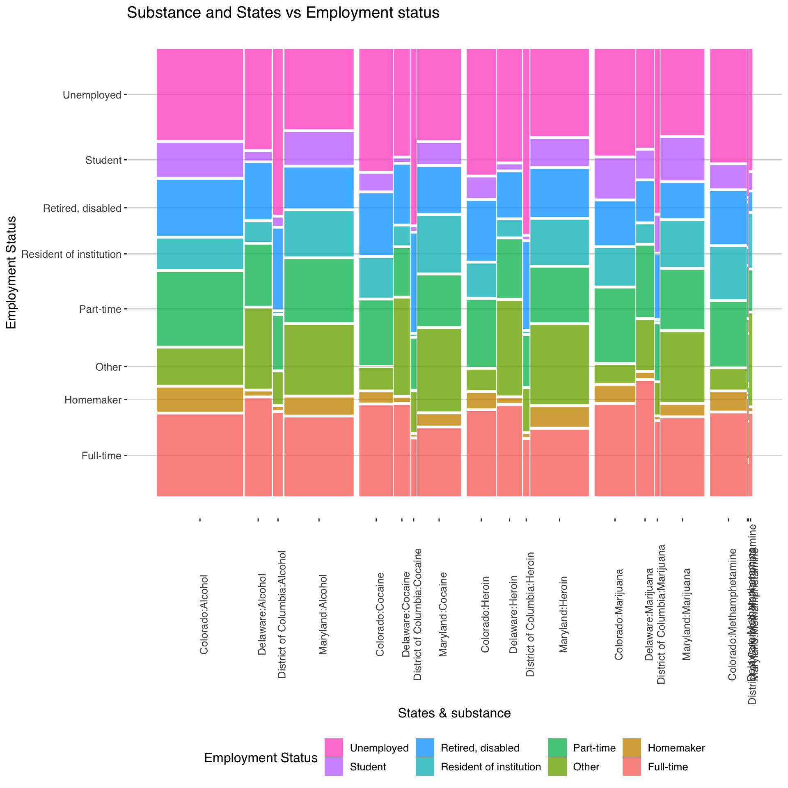
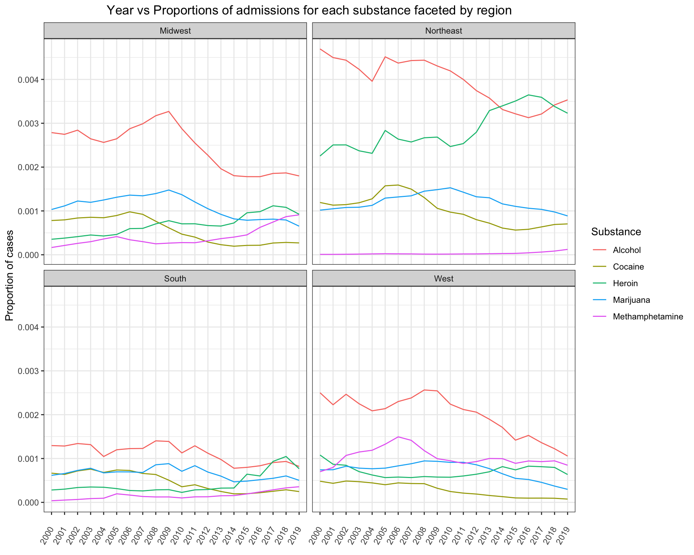
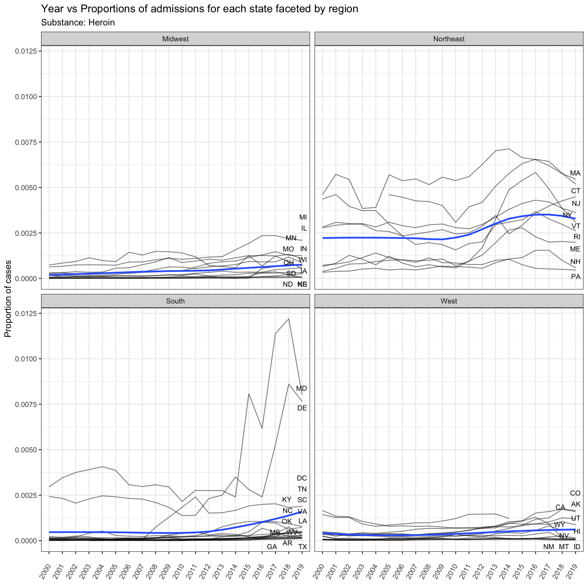
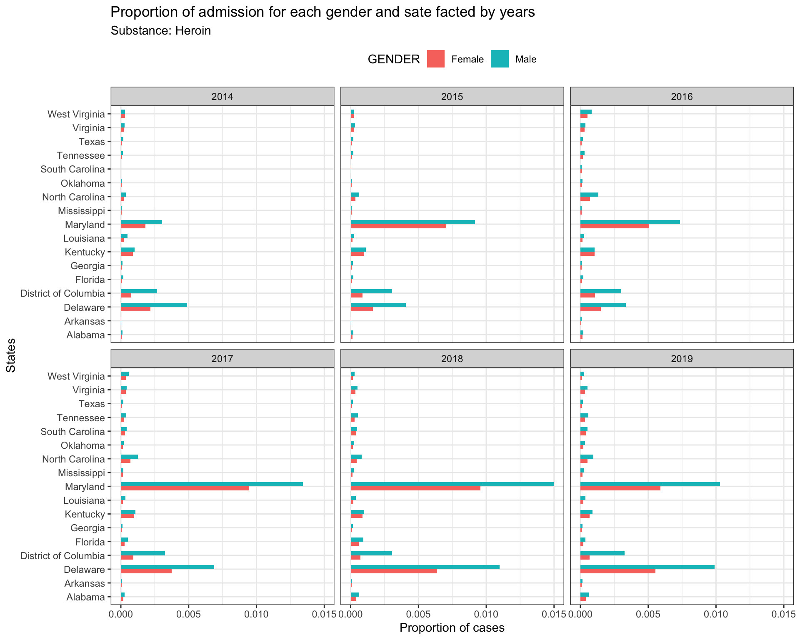
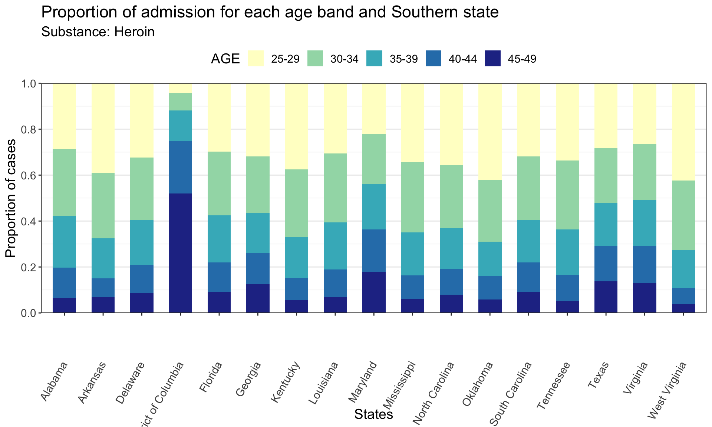

Chapter 5 Results
5.1 Does the admissions due to different substance vary with time?
Observations:
There seems to be a sharp increase in the number of people admitted due to Heroin after 2010. On the other end, patients admitted due to alcohol and cocaine overdose seems to have decreased sharply after 2009 and 2006 respectively.
Methamphetamine also seems to be on the rise, though the increase is not as sharp.
We need to see what has to to an increase in the cases of Heroin & Methamphetamine admission. Possible Hypothesis:
- People consuming alcohol or cocaine might be consuming heroin now.
- The demographics of the consumption might have changed over time.
- The expenses required for the hospital might have increased for alcohol and cocaine and people due to report it except in cases of emergency.

5.2 Does the treatment due to substance abuse vary with region and year?
 Observations:
- The trend of admission to hospitals due to Heroin consumption has increased sharply for the Northeast and south region and increased steadly for the Midwest region. Surprisingly, for the West region, the trend seems to be constant/decreasing.
- Is the trend same across all states in the region? Is there a steady increase or there is some event that led to steap increase over the last few years?
- Is there a differences in the demographics of each region that expalins this variability?
Admission due to Methamphetamine seems to on an increasing trend in South and Midwest. The trend is constant for the Northeast.
Out of all the regions, the West region seems to be performing the best as the trend of all the drugs (including alcohol) seems to be decreasing over the years.
- What is the difference here? Is it demographics or policies adopted by government? Is it because there is less awareness and people don’t get admitted to hospital?
5.3 Which states in the North-east and South are contributing to the increasing trend of admissions due to Heroin Abuse?
 Observations:
Observations:
In the Northeast region, Massachusetts (MA) and Connecticut (CT) admission due to Heroin abuse have increased drastically over the years.
Other states in the Northeast region namely New York, New Jersey, Vermont and Rhode Island have also seen an increase over the years. The entire region seems to be a concern area in terms of Heroin abuse.
In the South region, Maryland and Delaware seems to have a sharp increase in the admission due to Heroin abuse. District of columbia also shows an increase but all the other states seem to be almost steady in their rate of admission.
- Are all these trends recent or the increase has been steady?
5.4 Is the increasing trend of heroin admission recent or has it consistently increased over the years for the concerning states?

As the unnatural spikes in the trend of Maryland and Delaware, we might not be able to decipher trends in other states. So removing Maryland and Delware (outliers) to understand the trends better.
Observations:
- For the South region, Maryland and Delaware show recent uprise in the admission trend from 2014 and 2016 respectively. It had been almost steady for both the states before.
- What event triggered this sudden increase in admission? Was there increase in Heroin Abuse or the awareness of people regrading the treatment increased?
- For the District of columbia (DC), there was a sudden spike at 2007 but post that it has been steady.
- As this state is close to Maryland and Delaware, is it possible that the spikes in the three states are correrealted?
Almost all states in the north east are increasing steadily over time. In general the increase for most states became more sharp post 2009-10.
In the midwest the state of Michigan has been steadly increasing over time while in the west the state of Colorado sees a steady increase.
- Are the state governments of these respective states taking adequate steps to mitigate this trend?
5.5
5.6 Does gender play a role in admission due to heroin abuse in the South region?
 Observations:
- We had already identified that Maryland and Delaware show an unusual steap increase in the admission of Heroin abuse patients. Here, we see that the male and female do not increase in proportion over the years.
- Both Maryland and Delaware see a sharp increase over the years. But in case of Maryland,the proportion of admission increased for both males and females from 2016 to 2017 but from 2017 to 2018 the increase is male admissions is much more.
- Why is this happening?
- Is tis a data anomaly?
For Delaware, both females and males seem to be increasing in the same proportion.
For all the other states, there is no shift in the proportion of male and female admissions over the years.
5.7 Does age play a role in admission due to heroin abuse in the South region?

Observations:
- District of Columbia(DC) shows an unusual trend. Unlike other states in the South region, DC has much more admissions from people belonging to higher age group.
- Why is there such a trend? Is it because th
- There is no other apparent insight for other state and they all seem to behave similarly in terms of age group and admissions.
5.8 Does race play a role in the admission due to heroin abuse in the South region?
Obseravtions:
There are very unusual trends here. It should be noted that Delaware and Maryland are neigbouring states and the recent increase in the admissions is very different for the White and Black population. Admissions due to Black population have spiked a lot in Maryland, but it did not spike much in Delaware.
The admission of white population due to Heroin have increased in both Delaware and Maryland.
For district of Columbia, there is an increase in the admission of only Black population.